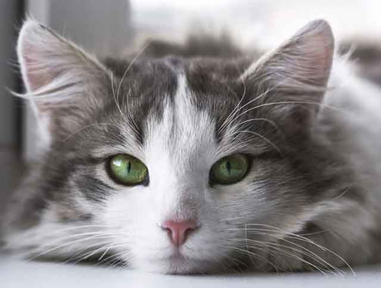
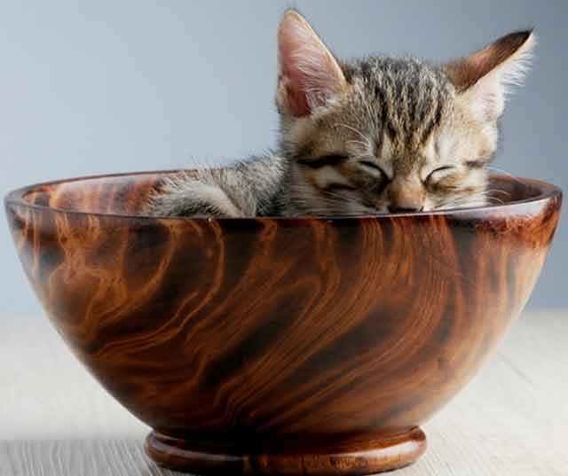
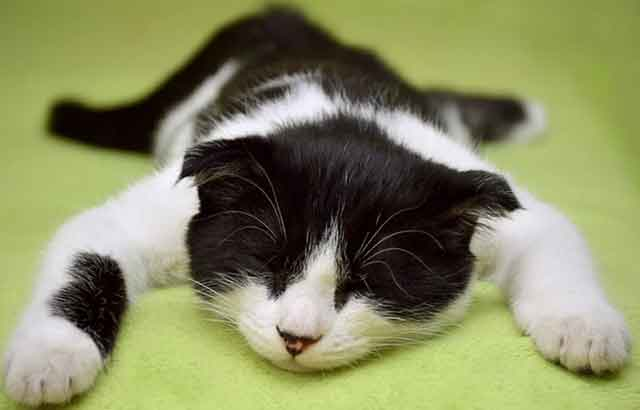
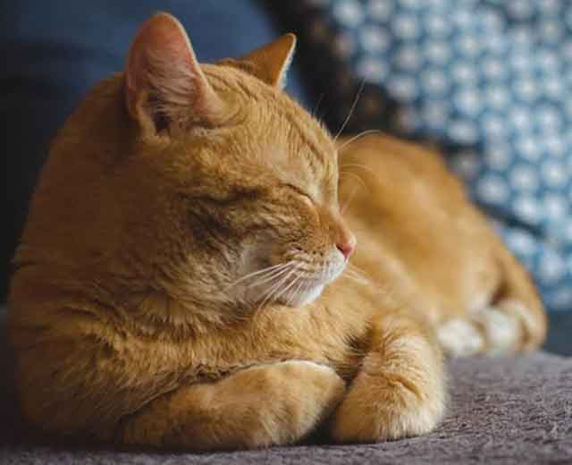
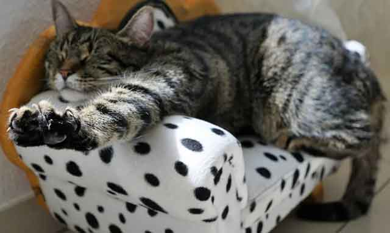

잠만 자는 고양이, 수면 시간 왜 이렇게 긴 걸까요
꾸벅꾸벅 조는 고양이. 하루에 절반 이상을 잠으로 보내는 고양이를 보며 너무 많은 잠을 자는 것은 아닌가 걱정될 때가 있을 텐데요. 어릴 때는 새끼 고양이라 잠을 많이 자는 줄로만 알았지만, 성묘가 돼서도 잠을 많이 자는 걸 보고 이상하다고 생각할 수 있어요. 고양이가 왜 이렇게 많은 잠을 자는지 궁금하시죠? 고양이의 수면 시간에 대해 알아볼게요!
초보 집사라면 당연히 궁금해할 수 있는 내용이에요. 하지만 고양이에 대한 수면을 제대로 알고 이해한다면, 고양이와의 함께 하는 시간이 더욱더 즐거워질 수 있다고 생각해요.
"고양이의 수면 시간은 얼마 정도?"
고양이는 하루에 16~20시간 정도를 잔다고 합니다. 사람보다 훨씬 많은 잠을 자죠. 게다가 야행성이라 밤에 잠자기보다는 낮에 수면 시간을 갖습니다. 새벽에 활동량이 더 많다 보니 낮에 깨어있는 사람에겐 고양이가 지나치게 많은 잠을 자는 게 아닌지 우려가 될 수 있겠네요!
"새끼 고양이는 얼마큼 잠을 잘까요?
모든 반려동물은 어릴 때 많은 잠을 잡니다. 성장을 위해서죠. 특히 처음 반려동물을 키우는 분에겐 다소 당황스러운 상황이기도 하는 데요. 하지만 당황할 필요 없이 충분한 잠을 잘 수 있는 안정적인 환경을 갖춰주는 게 중요하답니다. 잘 먹고, 잘 잔다면 어느새 쑥쑥 자라는 고양이 모습을 볼 수 있을 거예요.
새끼 고양이는 24시간 중 약 20시간을 잡니다. 자는 동안 성장에 필요한 호르몬이 방출되고 방출된 호르몬에 힘입어 성장을 이어나가겠죠?
"성묘, 노묘의 수면 시간"
앞서 설명해 드린 것과 같이 하루에 16~20시간 정도를 자는데 성묘가 됐을 때는 약 14~16시간으로 줄어듭니다. 그렇다고 잠을 결코 적게 자는 것은 아니므로 충분한 잠을 잘 수 있게 도와줘야겠죠.
다만, 노묘는 대략 9세를 기점으로 잠이 많이 늘어납니다. 에너지 효율이 떨어지고 활동 반경이 줄어들기 때문인데요. 질병이 없더라도 잠을 자는 시간이 늘어나는 것이니 걱정하지 마시고 조용히 수면 시간을 갖도록 하는 게 좋답니다.
"왜 이렇게 많이 자는 걸까요?"
다른 반려동물에 비해서도 많이 자는 고양이. 고양이는 평균 10시간, 소는 4시간에 비하면 상당히 많은 잠을 잔다고 볼 수 있어요.
이렇게 잠을 많이 자는 이유는 에너지를 보존하고 현재 몸 상태를 유지하기 위해서입니다. 또, 더위보다는 추위에 민감한 고양이가 체온을 유지하기 위해서인데요. 특히, 겨울에 사냥하기 힘들었던 고양이의 지난 야생에서의 생활이 몸에 베여 있어 겨울이면 더욱더 잠을 많이 자는 게 아닐까 싶습니다!
충분한 수면이 필요한 고양이. 그래서 고양이가 잠을 깊이 잘 수 있는 공간을 만들어 주는 게 중요해요. 추위를 느끼지 않고 안락한 상황 속에 잠들 수 있도록 조용하고 포근한 안식처를 만들어주는 게 좋답니다.
[출처] 잠만 자는 고양이, 수면 시간 왜 이렇게 긴 걸까요 ｜ 작성자 까미꾸러기